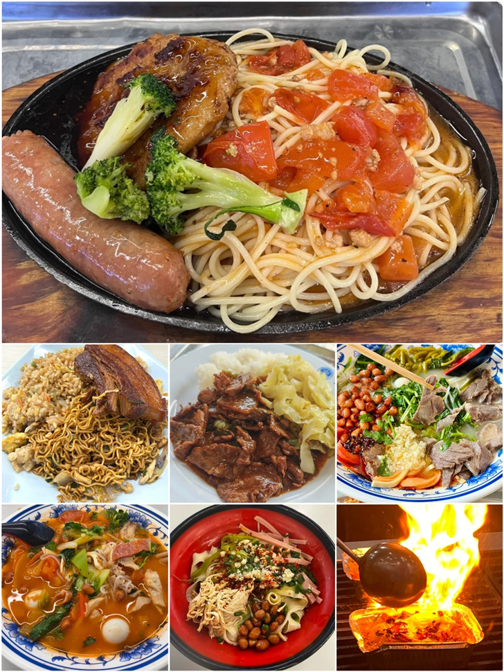

🥘
海琴楼
位置：学校南苑，共3层楼
包括：海琴楼一楼食堂B1、海琴楼二楼食堂B2、海琴楼三楼食堂（教工）B3
特色：
靠近各大教学楼、图书馆和南苑，是商船学子和教职工的常选之地。
一楼的油泼面人气极高，每日限量一百份，面条筋道，油泼香气四溢。二楼设有全素窗口和川菜窗口，满足不同饮食需求。
三楼为教工食堂，工作日中午不对学生开放，晚餐时学生可前往，有自选小火锅、特色小炒等佳肴，适合同学小聚。

日常美食